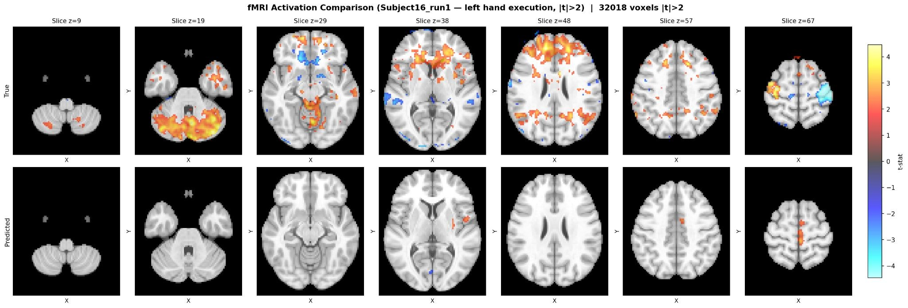
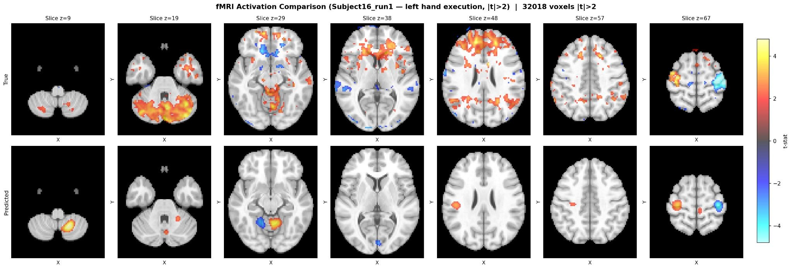
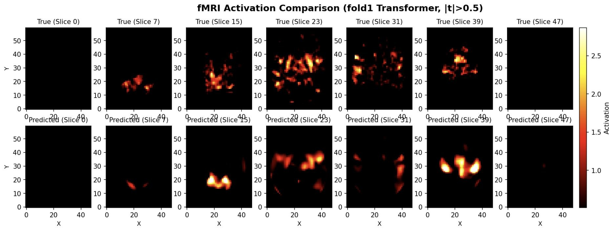

Cross-Modal Brain Signal Reconstruction
EEG has millisecond timing but only a coarse, ill-posed account of where activity comes from. fMRI answers that directly, at the cost of a scanner. This project asked whether a model could learn the map between them.
EEG is cheap, portable, and fast enough to follow activity millisecond by millisecond. Recovering where that activity came from is possible, through source localization and dipole fitting, but the inverse problem is underdetermined: many source configurations explain the same scalp recording equally well, so the estimate stays coarse and degrades for deep sources. fMRI answers the spatial question directly, to the millimeter, at the cost of a scanner that is expensive, immobile, and slow.
Source localization also solves for current sources, which is not the same quantity as a BOLD activation map. This project approached the mapping directly rather than through the biophysics: given EEG, predict the fMRI activation map that was recorded alongside it.
A three-person project with Jack Dohrn and John Parquette. I designed and built the cross-modal transformer, the third of the three architectures below. Jack built the preprocessing pipeline and the two EEGNet decoders.
Data
We used the Bondi 2025 simultaneous EEG-fMRI dataset: 17 subjects, three runs each, across six motor conditions covering execution and imagery for each hand and the right foot. The EEG side is 63 recorded channels downsampled to 250 Hz, 62 after dropping the ECG channel; the fMRI side is whole-brain volumes in MNI space at a two second repetition time, around 460 per run.
Epochs run from 0 to 3 seconds after task onset, and each one is stacked into a five-lag representation spaced two seconds apart. That spacing is not arbitrary: the hemodynamic response peaks around five to six seconds after the electrical event, so the lags sample its rising phase and peak rather than only the instant the task began. That alignment is what makes the mapping tractable.
Prediction targets came from a GLM fitted per run, using differential contrasts (right hand minus left hand) so the target isolated lateralized motor cortex rather than everything the brain does during a task. We split by subject, 13 for training and 2 each for validation and test, so no subject's data appeared on both sides of the split.
Three architectures
We built three models against the same targets. They share the encoding problem and differ in how the decoder treats the brain: as a flat list of voxels, as a volume, or as a set of locations that can each attend to the EEG separately.
EEGNet and an MLP decoder
EEGNet is a compact CNN built for EEG: a temporal convolution that learns frequency-band filters, then a depthwise spatial convolution that learns useful electrode combinations. We used it as an encoder and mapped its output straight to voxel values with an MLP. That decoder treats the brain as a flat list and predicts each voxel independently, which is fast but throws away the fact that an fMRI volume is three-dimensional.
EEGNet and a U-Net decoder
Same encoder, different decoder. The U-Net upsamples back to the full 79 x 95 x 79 volume, so neighboring voxels are predicted together rather than in isolation.
Transformer with cross-modal attention
EEG is already a set of sequences, and the third model treats it as one. Frequency bands become tokens carrying positional and channel embeddings, and each voxel's MNI coordinate is encoded separately. Cross-attention layers then use the voxel embeddings as queries and the EEG tokens as keys and values, so the model learns which EEG features predict activation at a particular location instead of learning one fixed mapping for the whole brain.
6.4 million parameters, four encoder and four decoder layers, 1,890 tokens per sample, trained with Adam. The loss is a composite of weighted MSE, a Pearson correlation term, and a variance-matching penalty.
The last two terms address a specific failure. MSE alone rewards predicting the mean, which is what the MLP decoder did, so the correlation and variance terms penalize a flat prediction. The failure mode was visible in the earlier models before this one was trained, and the loss was designed against it.
Results
| Model | MSE | MAE | R² | Correlation |
|---|---|---|---|---|
| EEGNet + MLP | 0.740 | 0.424 | -0.226 | 0.0338 |
| EEGNet + U-Net | 0.960 | 0.467 | -0.589 | 0.00256 |
| Transformer | 1.04 | 0.608 | -0.0406 | 0.291 |
All three have negative R², so none outperforms predicting the mean volume. They differ in what the predictions look like.
The MLP's failure has a specific name: mean collapse. Rather than responding to its EEG input it learned to emit an average volume, which lowers MSE without predicting anything. The maps show it clearly: the predicted row is a bare anatomical brain carrying a few stray voxels.
{kind=link}

The U-Net's spatial decoder does produce structure. It places smooth, distinct clusters instead of a blank volume, which is the benefit of predicting neighboring voxels together. They are far sparser than the true activation and do not align with it, and its correlation was the lowest of the three: sufficient capacity to generate plausible maps, insufficient data to place them correctly.
{kind=link}

The transformer reached the highest correlation of the three, and an SSIM of 0.443 against the true maps.
{kind=link}

One caveat applies to reading the three figures side by side. The MLP and U-Net panels are the same subject and run, thresholded at |t| > 2 over an anatomical underlay, while the transformer panel is a cross-validation fold thresholded at |t| > 0.5 without one. They show the character of each model's output, not a like-for-like comparison.
Why the numbers land where they do
Primarily data, and partly a choice about prediction targets. E2fNet, the closest published comparison, trained on 14,688 paired samples by predicting raw BOLD one sample per TR. We fitted a GLM across trials to get t-statistic contrast maps instead. Those are cleaner targets, but they collapse many volumes into a single training example, so 13 training subjects across three runs and six conditions yields far fewer pairs than a per-TR scheme would. That choice of target cost most of the available sample count.
E2fNet also worked from resting state. Six motor conditions add trial-to-trial variability, and motor execution and imagery produce less stereotyped responses than rest, so the mapping is harder to learn and generalizes across subjects less well. Training ran on laptop GPUs, which capped the transformer at six epochs, and validation loss was visibly unstable across a two-subject validation set. Testing on held-out subjects rather than held-out trials is also a demanding evaluation: a within-subject or subject-adapted model would likely score better.
One modeling choice is a clear limitation: rest epochs were treated as zero activation, which is not what a resting brain does.
References
- Bondi et al. (2025), the dataset. NeuroImage 121311
- Roos, Fukuda and Cap (2025), E2fNet, the comparison model. arXiv:2502.08025
- Lawhern et al. (2018), EEGNet. J. Neural Eng. 15(5)
PyTorchMNE-PythonNilearnEEGNetU-NetTransformers